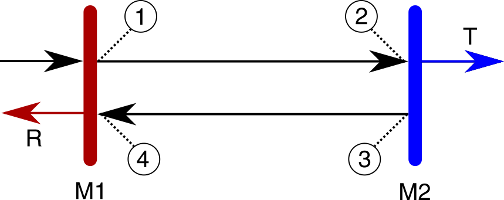

6 Wolframite for scientists II (Cavity physics)
(ns for-scientists.cavity-physics
"The second part of Wolframite for scientists. Here, we consider a real physics problem
as a demonstration of how one might use Wolframite in practice."
(:require
[clojure.math :as math]
[scicloj.kindly.v4.kind :as k]
[wolframite.api.v1 :as wl]
[wolframite.tools.hiccup :as wh]
[wolframite.wolfram :as w :refer :all
:exclude [* + - -> / < <= = == > >= fn
Byte Character Integer Number Short String Thread]]))Congratulations if you made it here from part I. In this part, rather than introducing Wolframite, per se, we’re going to solve a physics problem, such that Wolframite is simply a tool to get the job done.
First of all, we redefine the shortcuts that we used in the previous part, before introducing the problem at hand.
(def aliases ; NOTE: These aliases are already included by default
'{** Power
++ Conjugate
x> Replace
x>> ReplaceAll
<_> Expand
<<_>> ExpandAll
++<_> ComplexExpand
>_< Simplify
>>_<< FullSimplify
⮾ NonCommutativeMultiply
√ Sqrt
∫ Integrate})(wl/restart! {:aliases aliases}){:status :ok, :wolfram-version 14.2, :started? true}(defmacro eval->
"Extends the threading macro to automatically pass the result to wolframite eval."
[& xs]
`(-> ~@xs wl/!))(defn TeX
"UX fix. Passes the Wolfram expression to ToString[TeXForm[...]], as the unsuspecting coder might not realise that 'ToString' is necessary."
[tex-form]
(ToString (TeXForm tex-form)))(defmacro TeX->
"Extends the thread-first macro to automatically eval and prepare the expression for TeX display."
[& xs]
`(-> ~@xs TeX wl/! k/tex))(defmacro eval->>
"Extends the threading macro to automatically pass the result to wolframite eval."
[& xs]
`(->> ~@xs wl/!))(defmacro TeX->>
"Extends the thread-last macro to automatically eval and prepare the expression for TeX display."
[& xs]
`(->> ~@xs TeX wl/! k/tex))(defn ||2
"The intensity: the value times the conjugate of the value or, equivalently, the absolute value squared."
[x]
(w/* x (w/++ x)))6.1 Cavities?
Outside of the operating room, the most common notion of cavities is, what we might otherwise call, an optical resonator. One way of looking at it, although quantum mechanics makes this more difficult, is that an optical cavity is simply just a light trap, such that once light gets in, it bounces around for a while and then leaves.
For demo purposes, our question then is ‘how can we model this?’ and ‘how does the light intensity, inside the cavity, depend on some experimental variables’?
6.2 Setup
Assuming a simple two-mirror setup, with independent reflectivities and transmission, the system can be described as a ray oscillating between four key interfaces, as illustrated in the figure.
(k/hiccup [:img {:src "notebooks/for_scientists/Cavity-MirrorScatteringLoss.png"}])
We must therefore consider the electric field at each interface, before solving for the intensity both inside and outside.
6.3 Interfaces
Setting the incoming field amplitude to unity, then the value of the field at position one, after one round trip, is the sum of the transmission coefficient and the field travelling in the opposing direction e.g.
(def E1
(w/+ 't1 (w/* 'r1 (w/- 'E4))))At position two, the same field has travelled the full length of the cavity, L, and so has picked up a change in phase,
(def phi
(w/* 'k 'L)), where k is the field wavenumber:
(def E2
(w/* E1 (Exp (w/* I phi)))). Note how we are able to seamlessly mix Clojure and Wolfram expressions.
At position three, the field undergoes reflection and so now carries an additional reflection coefficient as well as an extra π phase change.
(def E3
(w/* (w/- 'r2) E2))By position four, the field has travelled a further distance L and so is now equal to
(def E4
(w/* E3 (Exp (w/* I phi)))). Which we can evaluate and visualise with one of our handy macros.
(TeX->> E4
(w/== 'E4))\[\text{E4}=\text{r2} \left(-e^{2 i k L}\right) (\text{t1}-\text{E4} \text{r1})\]
6.4 Fields
Using these expressions, we can now calculate the inner, transmitted and reflected fields of the cavity (with some subtle phase assumptions). Note how easy it is to, first of all, form an equation from the symbol ’E4 and the clojure variable E4, and, second of all, to rearrange the equation for a solution.
(def e4 (-> (w/== 'E4 E4)
(Solve 'E4)
First First))(TeX-> e4)\[\text{E4}\to \frac{\text{r2} \text{t1} e^{2 i k L}}{-1+\text{r1} \text{r2} e^{2 i k L}}\]
Substitution and simplification can then be used to arrive at the transmission and reflection, respectively.
(def T (-> (x>> (w/* E2 't2)
e4)
w/>>_<<))(TeX->> T (w/== 'T))\[T=\frac{\text{t1} \text{t2} e^{i k L}}{1-\text{r1} \text{r2} e^{2 i k L}}\]
(def R (-> (w/+ (w/* E4 't1) 'r1)
(x>> e4)
>>_<<
Together))(TeX->> R (w/== 'R))\[R=\frac{\text{r1}^2 \text{r2} e^{2 i k L}+\text{r2} \text{t1}^2 e^{2 i k L}-\text{r1}}{-1+\text{r1} \text{r2} e^{2 i k L}}\]
6.5 Observables
Taking the square of the fields (using the complex conjugate), gives the corresponding observables, i.e. things that can be actually measured.
(def I4 (-> (w/x>> 'E4 e4) ||2
++<_>
>>_<<))(TeX-> (w/== 'I4 (w/** (Abs 'E4) 2) I4))\[\text{I4}=| \text{E4}| ^2=\frac{\text{r2}^2 \text{t1}^2}{-2 \text{r1} \text{r2} \cos (2 k L)+\text{r1}^2 \text{r2}^2+1}\]
(def Tsq (-> T ||2
++<_>
>>_<<))(TeX-> (w/== (w/** 'T 2) Tsq))\[T^2=\frac{\text{t1}^2 \text{t2}^2}{-2 \text{r1} \text{r2} \cos (2 k L)+\text{r1}^2 \text{r2}^2+1}\]
(def Rsq (-> R ||2
++<_>
>>_<<
Together))(TeX-> (w/== (w/** 'R 2) Rsq))\[R^2=\frac{-2 \text{r1}^3 \text{r2} \cos (2 k L)-2 \text{r1} \text{r2} \text{t1}^2 \cos (2 k L)+\text{r1}^4 \text{r2}^2+2 \text{r1}^2 \text{r2}^2 \text{t1}^2+\text{r1}^2+\text{r2}^2 \text{t1}^4}{-2 \text{r1} \text{r2} \cos (2 k L)+\text{r1}^2 \text{r2}^2+1}\]
6.6 Observables with loss
The above result is a perfectly reasonable, but simple, model. More realistically, we want to be able to understand mirrors that have losses, i.e. that don’t just reflect or transmit light, but that actually absorb or ‘waste’ light.
This is one of the places that Wolfram really shines. Almost the entire engine is designed around replacement rules. And so we just have to define a substitution, which says that reflection + transmission + loss is equal to 1:
(def losses
[(w/-> (w/** 'r1 2)
(w/+ 1
(w/- 'l1)
(w/- (w/** 't1 2))))
(w/-> (w/** 'r2 2)
(w/+ 1
(w/- 'l2)
(w/- (w/** 't2 2))))])and substitute these into the equations. We’re going to go a step further however…
6.7 Approximations
Rather than just substitute the new rule into our expressions, we’re going to take this opportunity to define some other replacement rules. Now so far, we’ve been fairly mathematically pure, but a lot of physics is about knowing when (and being able) to make good approximations.
(def approximations
[(w/-> (w/* 'r1 'r2)
(let [vars [(w/** 't1 2) (w/** 't2 2) 'l1 'l2]]
(-> (x>> (w/* (√ (w/** 'r1 2))
(√ (w/** 'r2 2)))
losses)
(Series ['t1 0 2]
['t2 0 2]
['l1 0 2]
['l2 0 2])
Normal
<<_>>
(x>> (mapv #(w/-> % (w/* 'temp %)) vars))
(Series ['temp 0 1])
Normal
(x>> (w/-> 'temp 1)))))])(TeX-> approximations)\[\left\{\text{r1} \text{r2}\to \frac{1}{2} \left(-\text{l1}-\text{l2}-\text{t1}^2-\text{t2}^2\right)+1\right\}\]
What’s happening here is that we are simplifying the expression for r1r2 by assuming that the transmission and loss for light going through a mirror is small. So small, that higher powers of these variabes are negligible. And so, we substitute the values into the expression, expand the functions in a power series and neglect any higher powers. The neglect is done by inserting ‘big O’ notation and then restricting the series to a single power in that variable. As we want to do this for multiple variables, then we map over each one. This is a complicated mathematical procedure, but Wolframite allows us to do this quite concisely, apart from some necessary Wolfram datatype conversions (e.g.* using the w/Normal function).
6.8 The cavity field
We remember (from part I) that Wolfram can define quite general approximations. With the small angle approximation, and those defined above, we can formulate our final expression for the optical intensity inside the cavity:
(def small-angle
(_> (Cos (Pattern 'x (Blank)))
(w/+ 1 (w/* -1/2 (w/** 'x 2)))))(def I4--approx
(eval-> I4
(x>> (w/-> (Cos (w/* 2 'k 'L))
(Cos 'phi)))
(x>> approximations)
(x>> (w/-> (w/** (w/* 'r1 'r2) 2)
(-> (x>> (w/* 'r1 'r2) approximations)
(w/** 2))))
(x>> (conj losses small-angle))
>_<))(TeX->> I4--approx
(w/== (w/** (Abs 'E4) 2)))\[| \text{E4}| ^2=\frac{4 \text{t1}^2 \left(-\text{l2}-\text{t2}^2+1\right)}{-2 \left(\phi ^2-2\right) \left(\text{l1}+\text{l2}+\text{t1}^2+\text{t2}^2-2\right)+\left(\text{l1}+\text{l2}+\text{t1}^2+\text{t2}^2-2\right)^2+4}\]
6.9 Visualised
So we finally have an equation for the field inside the cavity. If we were mathematicians, then of course, we might have stopped here. Assuming that it’s only real scientists who’re reading this (shhh!), then the next step is to explore these equations graphically, under practical assumptions.
For this, we will define a few utility functions, that also demonstrate Wolfram’s conciseness.
(defn linspace
"A list of n numbers between a and b."
[a b n]
(let [d (/ (- b a) (dec n))]
(into []
(map (fn [x]
(+ a
(* x d)))
(range n)))))(defn coordinates
"There's no numpy here, so what do we do? It turns out Wolfram can reimplement a meshgrid-like function very concisely (let's not talk about the performance though...)."
[xmin xmax ymin ymax]
(eval-> (Outer List
(linspace xmin xmax 100)
(linspace ymin ymax 100))
(Flatten 1)))(defn Efield
"For convenience, we build a clojure function over the Wolfram expression created earlier."
[t1 t2 l1 l2 phi]
(-> (x>> I4--approx
[(w/-> 't1 t1)
(w/-> 't2 t2)
(w/-> 'l1 l1)
(w/-> 'l2 l2)
(w/-> 'phi phi)])
wl/!))(defn Efield--transmission-phase
"This is just a function to reduce the number of variables over which we plot. We can't (easily) plot in 4-D!"
[[t1 phase]]
[t1 phase (Efield t1 t1 20E-6 20E-6 phase)])(wl/! (w/_= 'nums (mapv Efield--transmission-phase
(coordinates
(math/sqrt 50E-6)
(math/sqrt 700E-6)
-0.001
0.001))))(wh/show
(w/ListPlot3D 'nums
(w/-> PlotRange All)
(w/-> Boxed false)
(w/-> AxesLabel
["Mirror transmission" "Phase" "Intracavity intensity"])))ListPlot3D[nums, Rule[PlotRange, All], Rule[Boxed, False], Rule[AxesLabel, {"Mirror transmission", "Phase", "Intracavity intensity"}]]
![]()
And there you have it! It turns out that if you get the phase right and you buy high quality mirrors then you can massively amplify the laser light. In fact, if you add a ‘gain’ material in the middle then such light amplification by the stimulated emission of radiation has a catchier name: it’s called a Laser!
7 Acknowledgements
This tutorial was made with the help of Thomas Clark, Jakub Holý and Daniel Slutsky. The cavity field derivation, itself, followed in the footsteps of one Francis ‘Tito’ Williams.